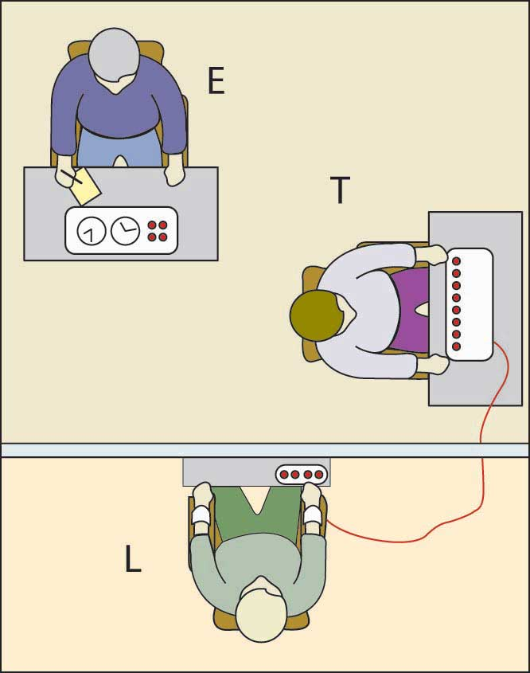
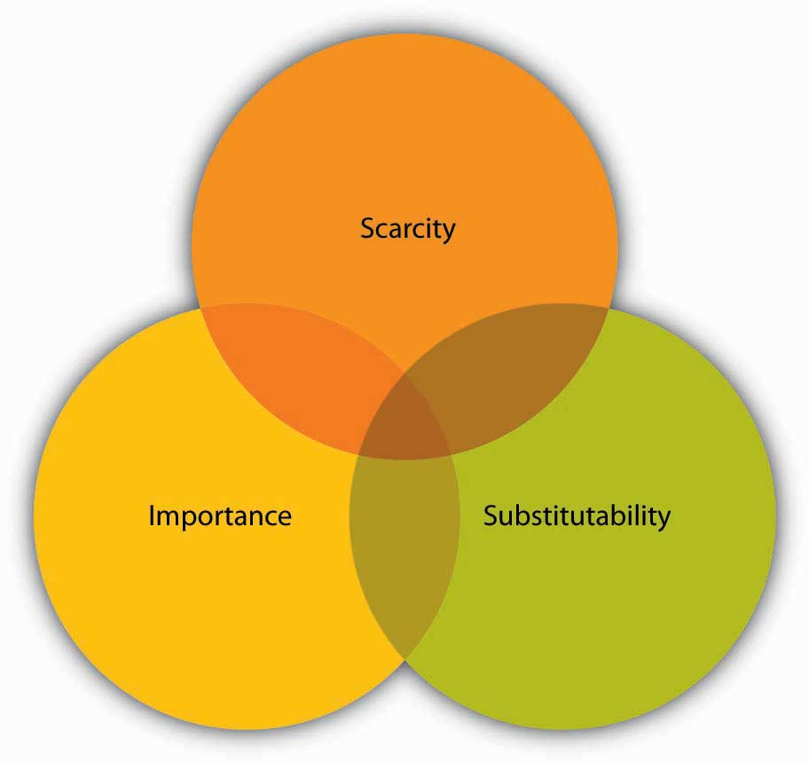
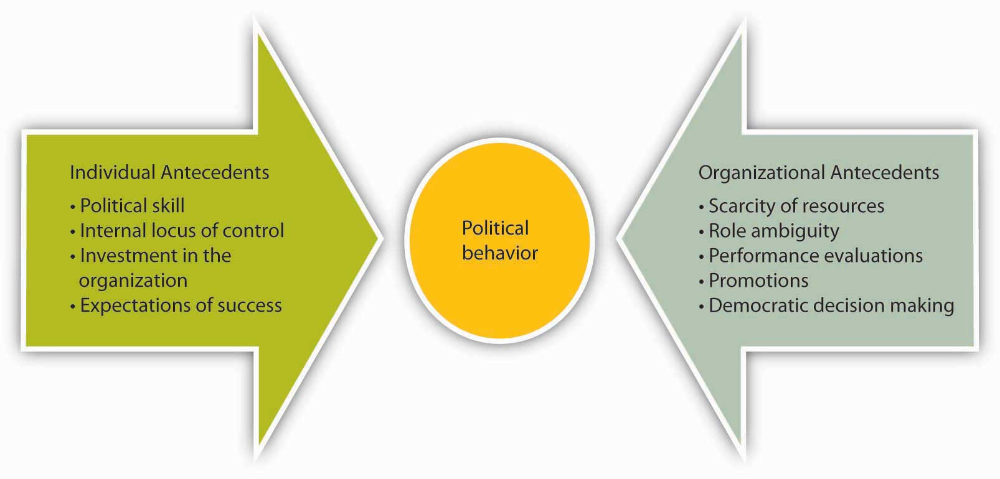
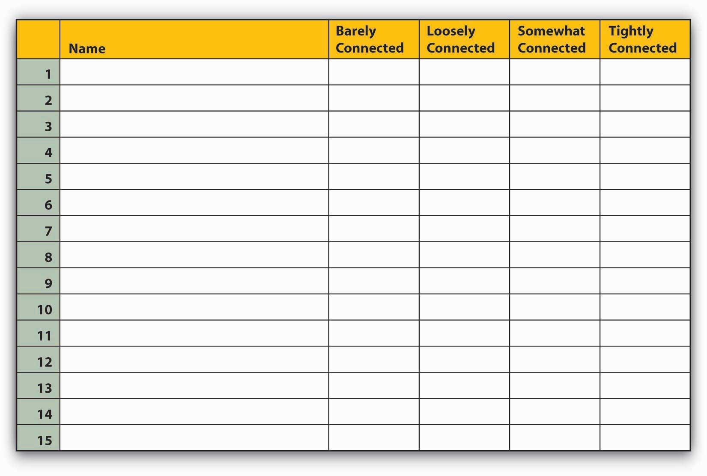
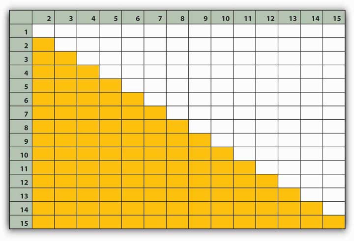

After reading this chapter, you should be able to do the following:
If you are interested in learning more about Steve Jobs as he describes pivotal moments in his life, view Steve Jobs’s commencement speech at Stanford in 2005, available at the following Web site: http://www.youtube.com/watch?v=UF8uR6Z6KLc
Figure 13.1

Source: http://commons.wikimedia.org/wiki/File:Steve_Jobs_with_the_Apple_iPad_no_logo.jpg by Matt Buchanan.
In 2007, Fortune named Steve Jobs the “Most Powerful Person in Business.” In 2009, the magazine named him “CEO of the Decade.” Jobs, CEO of Apple Inc. (NASDAQ: AAPL), has transformed no fewer than five different industries: computers, Hollywood movies, music, retailing, and wireless phones. His Apple II ushered in the personal computer era in 1977, and the graphical interface of the Macintosh in 1984 set the standard that all other PCs emulated. His company Pixar defined the computer-animated feature film. The iPod, iTunes, and iPhone revolutionized how we listen to music, how we pay for and receive all types of digital content, and what we expect of a mobile phone.
How has Jobs done it? Jobs draws on all six types of power: legitimate, expert, reward, information, coercive, and referent. His vision and sheer force of will helped him succeed as a young unknown. But the same determination that helps him succeed has a darker side—an autocracy and drive for perfection that can make him tyrannical. Let’s take each of these in turn.
Those who work with him say Jobs is very hard to please. However, they also say that this means that Apple employees work hard to win his approval. “He has the ability to pull the best out of people,” says Cordell Ratzlaff, who worked closely with Jobs on OS X for 18 months. “I learned a tremendous amount from him.” Jobs’s ability to persuade and influence has come to be called a “reality distortion field.” As Bud Tribble put it, “In his presence, reality is malleable. He can convince anyone of practically anything.” Hertzfeld describes his style as “a confounding mélange of a charismatic rhetorical style, an indomitable will, and an eagerness to bend any fact to fit the purpose at hand.” The influence works even when you’re aware of it, and it works even on “enemies”: “No other high-tech impresario could walk into the annual sales meeting of one of his fiercest rivals and get a standing ovation,” which is what Jobs got in 2002 from Intel Corporation (the ally of Apple archrival Microsoft in the partnership known as Wintel: Windows + Intel).
Jobs’s power is not infallible—he was ousted from his own company in 1987 by the man he hired to help him run it. But he returned in 1997 and brought the company back from the brink of failure. The only years that Apple was unprofitable were the years during Jobs’s absence. Many are watching to see how Apple and Jobs succeed with the iPad in 2010.
Case written by [citation redacted per publisher request]. Based on information from Schlender, B. (2007, November 27). The power of Steve Jobs. Fortune, 117–118; Sutton, R. (2007). The no asshole rule. New York: Warner Business Books; Kahney, L. (2008, March 18). How Apple got everything right by doing everything wrong. Wired. Retrieved January 4, 2008, from http://www.wired.com/techbiz/it/magazine/16-04/bz_apple; Hertzfeld, A. (1981, February). Reality distortion field. Retrieved January 4, 2008, from http://folklore.org/StoryView.py?story =Reality_Distortion_Field.txt.
We’ll look at the aspects and nuances of power in more detail in this chapter, but simply put, powerThe ability to influence the behavior of others to get what you want. is the ability to influence the behavior of others to get what you want. Gerald Salancik and Jeffery Pfeffer concur, noting, “Power is simply the ability to get things done the way one wants them to be done.”Salancik, G., & Pfeffer, J. (1989). Who gets power. In M. Thushman, C. O’Reily, & D. Nadler (Eds.), Management of organizations. New York: Harper & Row. If you want a larger budget to open a new store in a large city and you get the budget increase, you have used your power to influence the decision.
Power distribution is usually visible within organizations. For example, Salancik and Pfeffer gathered information from a company with 21 department managers and asked 10 of those department heads to rank all the managers according to the influence each person had in the organization. Although ranking 21 managers might seem like a difficult task, all the managers were immediately able to create that list. When Salancik and Pfeffer compared the rankings, they found virtually no disagreement in how the top 5 and bottom 5 managers were ranked. The only slight differences came from individuals ranking themselves higher than their colleagues ranked them. The same findings held true for factories, banks, and universities.
The fact that we can see and succumb to power means that power has both positive and negative consequences. On one hand, powerful CEOs can align an entire organization to move together to achieve goals. Amazing philanthropists such as Paul Farmer, a doctor who brought hospitals, medicine, and doctors to remote Haiti, and Greg Mortenson, a mountaineer who founded the Central Asia Institute and built schools across Pakistan, draw on their own power to organize others toward lofty goals; they have changed the lives of thousands of individuals in countries around the world for the better.Kidder, T. (2004). Mountains beyond mountains: The quest of Dr. Paul Farmer, a man who would cure the world. New York: Random House; Mortenson, G., & Relin, D. O. (2006). Three cups of tea: One man’s mission to promote peace…One school at a time. New York: Viking. On the other hand, autocracy can destroy companies and countries alike. The phrase, “Power tends to corrupt, and absolute power corrupts absolutely” was first said by English historian John Emerich Edward Dalberg, who warned that power was inherently evil and its holders were not to be trusted. History shows that power can be intoxicating and can be devastating when abused, as seen in high-profile cases such as those involving Enron Corporation and government leaders such as the impeached Illinois Governor Rod Blagojevich in 2009. One reason that power can be so easily abused is because individuals are often quick to conform. To understand this relationship better, we will examine three famous researchers who studied conformity in a variety of contexts.
ConformityPeople’s tendencies to behave consistently with social norms. refers to people’s tendencies to behave consistently with social norms. Conformity can refer to small things such as how people tend to face forward in an elevator. There’s no rule listed in the elevator saying which way to face, yet it is expected that everyone will face forward. To test this, the next time you’re in an elevator with strangers, simply stand facing the back of the elevator without saying anything. You may notice that those around you become uncomfortable. Conformity can result in engaging in unethical behaviors, because you are led by someone you admire and respect who has power over you. Guards at Abu Ghraib said they were just following orders when they tortured prisoners.CNN.com. (2005, January 15). Graner sentenced to 10 years for abuses. Retrieved November 4, 2008, from http://www.cnn.com/2005/LAW/01/15/graner. court.martial/. People conform because they want to fit in with and please those around them. There is also a tendency to look to others in ambiguous situations, which can lead to conformity. The response to “Why did you do that?” being “Because everyone else was doing it” sums up this tendency.
So, does conformity occur only in rare or extreme circumstances? Actually, this is not the case. Three classic sets of studies illustrate how important it is to create checks and balances to help individuals resist the tendency to conform or to abuse authority. To illustrate this, we will examine findings from the Milgram, Asch, and Zimbardo studies.
Figure 13.2
This is an illustration of the setup of a Milgram experiment. The experimenter (E) convinces the subject (“Teacher” T) to give what are believed to be painful electric shocks to another subject, who is actually an actor (“Learner” L). Many subjects continued to give shocks despite pleas of mercy from the actors.
Stanley Milgram, a psychologist at Yale in the 1960s, set out to study conformity to authority. His work tested how far individuals would go in hurting another individual when told to do so by a researcher. A key factor in the Milgram study and others that will be discussed is the use of confederates, or people who seem to be participants but are actually paid by the researchers to take on a certain role. Participants believed that they were engaged in an experiment on learning. The participant (teacher) would ask a series of questions to another “participant” (learner). The teachers were instructed to shock the learners whenever an incorrect answer was given. The learner was not a participant at all but actually a confederate who would pretend to be hurt by the shocks and yell out in pain when the button was pushed. Starting at 15 volts of power, the participants were asked to increase the intensity of the shocks over time. Some expressed concern when the voltage was at 135 volts, but few stopped once they were told by the researcher that they would not personally be held responsible for the outcome of the experiment and that their help was needed to complete the experiment. In the end, all the participants were willing to go up to 300 volts, and a shocking 65% were willing to administer the maximum of 450 volts even as they heard screams of pain from the learner.Milgram, S. (1974). Obedience to authority. New York: Harper & Row.
Another researcher, Solomon Asch, found that individuals could be influenced to say that two lines were the same length when one was clearly shorter than the other. This effect was established using groups of four or more participants who were told they were in experiments of visual perception. However, only one person in the group was actually in the experiment. The rest were confederates, and the researchers had predetermined whether or not they gave accurate answers. Groups were shown a focal line and a choice of three other lines of varying length, with one being the same length as the focal line. Most of the time the confederates would correctly state which choice matched the focal line, but occasionally they would give an obviously wrong answer. For example, looking at the following lines, the confederates might say that choice C matches the length of the focal line. When this happened, the actual research participant would go along with the wrong answer 37% of the time. When asked why they went along with the group, participants said they assumed that the rest of the group, for whatever reason, had more information regarding the correct choice. It only took three other individuals saying the wrong answer for the participant to routinely agree with the group. However, this effect was decreased by 75% if just one of the insiders gave the correct answer, even if the rest of the group gave the incorrect answer. This finding illustrates the power that even a small dissenting minority can have. Additionally, it holds even if the dissenting confederate gives a different incorrect answer. As long as one confederate gave an answer that was different from the majority, participants were more likely to give the correct answer themselves.Asch, S. E. (1952b). Social psychology. Englewood Cliffs, NJ: Prentice Hall; Asch, S. E. (1956). Studies of independence and conformity. A minority of one against a unanimous majority. Psychological Monographs, 70(9), Whole No. 416. A meta-analysis of 133 studies using Asch’s research design revealed two interesting patterns. First, within the United States, the level of conformity has been decreasing since the 1950s. Second, studies done in collectivistic countries such as Japan showed more conformity than those done in more individualistic countries such as Great Britain.Bond, R., & Smith, P. B. (1996). Culture and conformity: A meta-analysis of studies using Asch’s (1952b, 1956) line judgment task. Psychological Bulletin, 119, 111–137.
Figure 13.3
Participants were asked one by one to say which of the lines on the right matched the line on the focal line on the left. While A is an exact match, many participants conformed when others unanimously chose B or C.
Philip Zimbardo, a researcher at Stanford University, conducted a famous experiment in the 1970s.Zimbardo, P. G. Stanford prison experiment. Retrieved January 30, 2009, from http://www.prisonexp.org/. While this experiment would probably not make it past the human subjects committee of schools today, at the time, he was authorized to place an ad in the paper that asked for male volunteers to help understand prison management. After excluding any volunteers with psychological or medical problems or with any history of crime or drug abuse, he identified 24 volunteers to participate in his study. Researchers randomly assigned 18 individuals to the role of prisoner or guard. Those assigned the role of “prisoners” were surprised when they were picked up by actual police officers and then transferred to a prison that had been created in the basement of the Stanford psychology building. The guards in the experiment were told to keep order but received no training. Zimbardo was shocked with how quickly the expected roles emerged. Prisoners began to feel depressed and helpless. Guards began to be aggressive and abusive. The original experiment was scheduled to last 2 weeks, but Zimbardo ended it after only 6 days upon seeing how deeply entrenched in their roles everyone, including himself, had become. Next we will examine the relationship between dependency and power.
DependencyDirectly related to power. The more that a person or unit is dependent on you, the more power you have. is directly related to power. The more that a person or unit is dependent on you, the more power you have. The strategic contingencies model provides a good description of how dependency works. According to the model, dependency is power that a person or unit gains from their ability to handle actual or potential problems facing the organization.Saunders, C. (1990, January). The strategic contingencies theory of power: Multiple perspectives. Journal of Management Studies, 21(1), 1–18. You know how dependent you are on someone when you answer three key questions that are addressed in the following sections.
In the context of dependency, scarcityIn the context of dependency, refers to the uniqueness of a resource. refers to the uniqueness of a resource. The more difficult something is to obtain, the more valuable it tends to be. Effective persuaders exploit this reality by making an opportunity or offer seem more attractive because it is limited or exclusive. They might convince you to take on a project because “it’s rare to get a chance to work on a new project like this,” or “You have to sign on today because if you don’t, I have to offer it to someone else.”
ImportanceThe value of the resource. refers to the value of the resource. The key question here is “How important is this?” If the resources or skills you control are vital to the organization, you will gain some power. The more vital the resources that you control are, the more power you will have. For example, if Kecia is the only person who knows how to fill out reimbursement forms, it is important that you are able to work with her, because getting paid back for business trips and expenses is important to most of us.
Finally, substitutabilityOne’s ability to find another option that works as well as the one offered. refers to one’s ability to find another option that works as well as the one offered. The question around whether something is substitutable is “How difficult would it be for me to find another way to this?” The harder it is to find a substitute, the more dependent the person becomes and the more power someone else has over them. If you are the only person who knows how to make a piece of equipment work, you will be very powerful in the organization. This is true unless another piece of equipment is brought in to serve the same function. At that point, your power would diminish. Similarly, countries with large supplies of crude oil have traditionally had power to the extent that other countries need oil to function. As the price of oil climbs, alternative energy sources such as wind, solar, and hydropower become more attractive to investors and governments. For example, in response to soaring fuel costs and environmental concerns, in 2009 Japan Airlines successfully tested a blend of aircraft fuel made from a mix of camelina, jatropha, and algae on the engine of a Boeing 747-300 aircraft.Krauss, C. (2009, January 30). Japan Airlines joins the biofuels race. New York Times. Retrieved January 30, 2009, from http://greeninc.blogs.nytimes.com/2009/01/30/japan-airlines-joins-the-biofuels-race/.
Figure 13.4
Possessing any of the three aspects of a resource could make others depend on you, two would make you extremely needed, and having all three could make you indispensable.
Power is the ability to influence the behavior of others to get what you want. It is often visible to others within organizations. Conformity manifests itself in several ways, and research shows that individuals will defer to a group even when they may know that what they are doing is inaccurate or unethical. Having just one person dissent helps to buffer this effect. The more dependent someone is on you, the more power you have over them. Dependency is increased when you possess something that is considered scarce, important, and nonsubstitutable by others.
Having power and using power are two different things. For example, imagine a manager who has the power to reward or punish employees. When the manager makes a request, he or she will probably be obeyed even though the manager does not actually reward the employee. The fact that the manager has the ability to give rewards and punishments will be enough for employees to follow the request. What are the sources of one’s power over others? Researchers identified six sources of power, which include legitimate, reward, coercive, expert, information, and referent.French, J. P. R., Jr., & Raven, B. (1960). The bases of social power. In D. Cartwright & A. Zander (Eds.), Group dynamics (pp. 607–623). New York: Harper and Row. You might earn power from one source or all six depending on the situation. Let us take a look at each of these in turn, and continue with Steve Jobs from the opening case as our example.
Legitimate powerPower that comes from one’s organizational role or position. is power that comes from one’s organizational role or position. For example, a boss can assign projects, a policeman can arrest a citizen, and a teacher assigns grades. Others comply with the requests these individuals make because they accept the legitimacy of the position, whether they like or agree with the request or not. Steve Jobs has enjoyed legitimate power as the CEO of Apple. He could set deadlines and employees comply even if they think the deadlines were overly ambitious. Start-up organizations often have founders who use their legitimate power to influence individuals to work long hours week after week in order to help the company survive.
Reward powerThe ability to grant a reward, such as an increase in pay, a perk, or an attractive job assignment. is the ability to grant a reward, such as an increase in pay, a perk, or an attractive job assignment. Reward power tends to accompany legitimate power and is highest when the reward is scarce. Anyone can wield reward power, however, in the form of public praise or giving someone something in exchange for their compliance. When Steve Jobs ran Apple, he had reward power in the form of raises and promotions. Another example of reward power comes from Bill Gross, founder of Idealab, who has the power to launch new companies or not. He created his company with the idea of launching other new companies as soon as they could develop viable ideas. If members could convince him that their ideas were viable, he gave the company a maximum of $250,000 in seed money, and gave the management team and employees a 30% stake in the company and the CEO 10% of the company. That way, everyone had a stake in the company. The CEO's salary was capped at $75,000 to maintain the sense of equity. When one of the companies, Citysearch, went public, all employees benefited from the $270 million valuation.
In contrast, coercive powerThe ability to take something away or punish someone for noncompliance. is the ability to take something away or punish someone for noncompliance. Coercive power often works through fear, and it forces people to do something that ordinarily they would not choose to do. The most extreme example of coercion is government dictators who threaten physical harm for noncompliance. Parents may also use coercion such as grounding their child as punishment for noncompliance. Steve Jobs has been known to use coercion—yelling at employees and threatening to fire them. When John Wiley & Sons Inc. published an unauthorized biography of Jobs, Jobs’s response was to prohibit sales of all books from that publisher in any Apple retail store.Hafner, K. (2005, April 30). Steve Jobs’ review of his biography: Ban it. New York Times. Retrieved January 5, 2008, from http://www.nytimes.com/2005/04/30/technology/30apple.html?ei=5090&en=7cc0ad54117bc197&ex=1272513600&partner= rssuserland&emc=rss. In other examples, John D. Rockefeller was ruthless when running Standard Oil Company. He not only undercut his competitors through pricing, but he used his coercive power to get railroads to refuse to transport his competitor’s products. American presidents have been known to use coercion power. President Lyndon Baines Johnson once told a White House staffer, “Just you remember this. There’s only two kinds at the White house. There’s elephants and there’s ants. And I’m the only elephant.”Hughes, R., Ginnet, R., & Curphy, G. (1995). Power, influence and influence tactics. In J. T. Wren (Ed.), The leaders companion (p. 345). New York: Free Press.
Expert powerPower that comes from knowledge and skill. comes from knowledge and skill. Steve Jobs has expert power from his ability to know what customers want—even before they can articulate it. Others who have expert power in an organization include long-time employees, such as a steelworker who knows the temperature combinations and length of time to get the best yields. Technology companies are often characterized by expert, rather than legitimate power. Many of these firms utilize a flat or matrix structure in which clear lines of legitimate power become blurred as everyone communicates with everyone else regardless of position.
Information powerPower that comes from access to specific information. is similar to expert power but differs in its source. Experts tend to have a vast amount of knowledge or skill, whereas information power is distinguished by access to specific information. For example, knowing price information gives a person information power during negotiations. Within organizations, a person’s social network can either isolate them from information power or serve to create it. As we will see later in this chapter, those who are able to span boundaries and serve to connect different parts of the organizations often have a great deal of information power. In the TV show Mad Men, which is set in the 1960s, it is clear that the switchboard operators have a great deal of information power as they place all calls and are able to listen in on all the phone conversations within the advertising firm.
Figure 13.6

As the 44th elected president of the United States, Barack Obama has legitimate power. As commander-in-chief of the U.S. Armed Forces, he also has coercive power. His ability to appoint individuals to cabinet positions affords him reward power. Individuals differ on the degree to which they feel he has expert and referent power, as he received 52% of the popular vote in the 2008 election. Shortly after the election, he began to be briefed on national security issues, providing him with substantial information power as well.
Referent powerPower that stems from the personal characteristics of the person such as the degree to which we like, respect, and want to be like them. stems from the personal characteristics of the person such as the degree to which we like, respect, and want to be like them. Referent power is often called charismaThe ability to attract others, win their admiration, and hold them spellbound.—the ability to attract others, win their admiration, and hold them spellbound. Steve Jobs’s influence as described in the opening case is an example of this charisma.
Starting at infancy, we all try to get others to do what we want. We learn early what works in getting us to our goals. Instead of crying and throwing a tantrum, we may figure out that smiling and using language causes everyone less stress and brings us the rewards we seek.
By the time you hit the workplace, you have had vast experience with influence techniques. You have probably picked out a few that you use most often. To be effective in a wide number of situations, however, it’s best to expand your repertoire of skills and become competent in several techniques, knowing how and when to use them as well as understanding when they are being used on you. If you watch someone who is good at influencing others, you will most probably observe that person switching tactics depending on the context. The more tactics you have at your disposal, the more likely it is that you will achieve your influence goals.
Al Gore and many others have spent years trying to influence us to think about the changes in the environment and the implications of global warming. They speak, write, network, and lobby to get others to pay attention. But Gore, for example, does not stop there. He also works to persuade us with direct, action-based suggestions such as asking everyone to switch the kind of light bulbs they use, turn off appliances when not in use, drive vehicles with better fuel economy, and even take shorter showers. Ironically, Gore has more influence now as a private citizen regarding these issues than he was able to exert as a congressman, senator, and vice president of the United States.
Do You Have the Characteristics of Powerful Influencers?
People who are considered to be skilled influencers share the following attributes.
How often do you engage in them? 0 = never, 1= sometimes, 2 = always.
If you scored 0–6: You do not engage in much effective influencing behavior. Think of ways to enhance this skill. A great place to start is to recognize the items on the list above and think about ways to enhance them for yourself.
If you scored 7–12: You engage in some influencing behavior. Consider the context of each of these influence attempts to see if you should be using more or less of it depending on your overall goals.
If you scored 13–16: You have a great deal of influence potential. Be careful that you are not manipulating others and that you are using your influence when it is important rather than just to get your own way.
Figure 13.7 Influence Tactics Use and OutcomesKipnis, D., Schmidt, S. M., & Wilkinson, J. (1980). Interorganizational influence tactics: Explorations in getting one’s way. Journal of Applied Psychology, 65, 440–452; Schriescheim, C. A., & Hinkin, T. R. (1990). Influence tactics used by subordinates: A theoretical and empirical analysis and refinement of Kipnis, Schmidt, and Wilkinson subscales. Journal of Applied Psychology, 75, 132–140; Yukl, G., & Falbe, C. M. (1991). The Importance of different power sources in downward and lateral relations. Journal of Applied Psychology, 76, 416–423.

Source: Adapted from information in Falbe, C. M., & Yukl, G. (1992). Consequences for managers of using single influence tactics and combinations of tactics. Academy of Management Journal, 35, 638–652.
Researchers have identified distinct influence tactics and discovered that there are few differences between the way bosses, subordinates, and peers use them, which we will discuss at greater depth later on in this chapter. We will focus on nine influence tactics. Responses to influence attempts include resistance, compliance, or commitment. ResistanceOccurs when the influence target does not wish to comply with the request and either passively or actively repels the influence attempt. occurs when the influence target does not wish to comply with the request and either passively or actively repels the influence attempt. ComplianceOccurs when the target does not necessarily want to obey, but they do. occurs when the target does not necessarily want to obey, but they do. CommitmentOccurs when the target not only agrees to the request but also actively supports it as well. occurs when the target not only agrees to the request but also actively supports it as well. Within organizations, commitment helps to get things done, because others can help to keep initiatives alive long after compliant changes have been made or resistance has been overcome.
You can make more friends in two months by becoming interested in other people than you can in two years by trying to get other people interested in you.
Dale Carnegie
How to Make Friends and Influence People was written by Dale Carnegie in 1936 and has sold millions of copies worldwide. While this book first appeared over 70 years ago, the recommendations still make a great deal of sense regarding power and influence in modern-day organizations. For example, he recommends that in order to get others to like you, you should remember six things:
This book relates to power and politics in a number of important ways. Carnegie specifically deals with enhancing referent power. Referent power grows if others like, respect, and admire you. Referent power is more effective than formal power bases and is positively related to employees’ satisfaction with supervision, organizational commitment, and performance. One of the keys to these recommendations is to engage in them in a genuine manner. This can be the difference between being seen as political versus understanding politics.
Impression managementActively shaping the way you are perceived by others. means actively shaping the way you are perceived by others. You can do this through your choice of clothing, the avatars or photos you use to represent yourself online, the descriptions of yourself on a résumé or in an online profile, and so forth. By using impression management strategies, you control information that make others see you in the way you want to be seen. Consider when you are “being yourself” with your friends or with your family—you probably act differently around your best friend than around your mother.Dunn, E., & Forrin, N. (2005). Impression management. Retrieved July 8, 2008, from http://www.psych.ubc.ca/~dunnlab/publications/Dunn_Forrin_2005.pdf.
On the job, the most effective approach to impression management is to do two things at once—build credibility and maintain authenticity. As Harvard Business School Professor Laura Morgan Roberts puts it, “When you present yourself in a manner that is both true to self and valued and believed by others, impression management can yield a host of favorable outcomes for you, your team, and your organization.”Stark, M. (2005, June 20). Creating a positive professional image. Q&A with Laura Morgan Roberts. Retrieved July 8, 2008, from the Harvard Business School Web site: http://hbswk.hbs.edu/item/4860.html.
There may be aspects of your “true self” that you choose not to disclose at work, although you would disclose them to your close friends. That kind of impression management may help to achieve group cohesiveness and meet professional expectations. But if you try to win social approval at work by being too different from your true self—contradicting your personal values—you might feel psychological distress.
It’s important to keep in mind that whether you’re actively managing your professional image or not, your coworkers are forming impressions of you. They watch your behavior and draw conclusions about the kind of person you are, whether you’ll keep your word, whether you’ll stay to finish a task, and how you’ll react in a difficult situation.
Since people are forming these theories about you no matter what, you should take charge of managing their impressions of you. To do this, ask yourself how you want to be seen. What qualities or character traits do you want to convey? Perhaps it’s a can-do attitude, an ability to mediate, an ability to make a decision, or an ability to dig into details to thoroughly understand and solve a problem.
Then, ask yourself what the professional expectations are of you and what aspects of your social identity you want to emphasize or minimize in your interactions with others. If you want to be seen as a leader, you might disclose how you organized an event. If you want to be seen as a caring person in whom people can confide, you might disclose that you’re a volunteer on a crisis helpline. You can use a variety of impression management strategies to accomplish the outcomes you want.
Here are the three main categories of strategies and examples of each:
Research shows that impression management occurs throughout the workplace. It is especially salient when it comes to job interviews and promotional contexts. Research shows that structured interviews suffer from less impression management bias than unstructured interviews, and that longer interviews lead to a lessening of the effects as well.Tsai, W., Chen, C., & Chiu, S. (2005). Exploring boundaries of the effects of applicant impression management tactics in job interviews. Journal of Management, 31, 108–125.
The type of influence tactic used tends to vary based on the target. For example, you would probably use different influence tactics with your boss than you would with a peer or with employees working under you.
Upward influenceThe ability to influence your boss and others in positions higher than yours., as its name implies, is the ability to influence your boss and others in positions higher than yours. Upward influence may include appealing to a higher authority or citing the firm’s goals as an overarching reason for others to follow your cause. Upward influence can also take the form of an alliance with a higher status person (or with the perception that there is such an alliance).Farmer, S. M., & Maslyn, J. M. (1999). Why are styles of upward influence neglected? Making the case for a configurational approach to influences. Journal of Management, 25, 653–682; Farmer, S. M., Maslyn, J. M., Fedor, D. B., & Goodman, J. S. (1997). Putting upward influence strategies in context. Journal of Organizational Behavior, 18, 17–42. As complexity grows, the need for this upward influence grows as well—the ability of one person at the top to know enough to make all the decisions becomes less likely. Moreover, even if someone did know enough, the sheer ability to make all the needed decisions fast enough is no longer possible. This limitation means that individuals at all levels of the organization need to be able to make and influence decisions. By helping higher-ups be more effective, employees can gain more power for themselves and their unit as well. On the flip side, allowing yourself to be influenced by those reporting to you may build your credibility and power as a leader who listens. Then, during a time when you do need to take unilateral, decisive action, others will be more likely to give you the benefit of the doubt and follow. Both Asian American and Caucasian American managers report using different tactics with superiors than those used with their subordinates.Xin, K. R., & Tsui, A. S. (1996). Different folks for different folks? Influence tactics by Asian-American and Caucasian-American managers. Leadership Quarterly, 7, 109–132. Managers reported using coalitions and rationality with managers and assertiveness with subordinates. Other research establishes that subordinates’ use of rationality, assertiveness, and reciprocal exchange was related to more favorable outcomes such as promotions and raises, while self-promotion led to more negative outcomes.Orpen, C. (1996). The effects of ingratiation and self promotion tactics on employee career success. Social Behavior and Personality, 24, 213–214; Wayne, S. J., Liden, R. C., Graf, I. K., & Ferris, G. R. (1997). The role of upward influence tactics in human resource decisions. Personnel Psychology, 50, 979–1006.
Influence takes place even before employees are hired. For example, ingratiation and rationality were used frequently by fire fighters during interviews.McFarland, L. A., Ryan, A. M., & Kriska, S. D. (2002). Field study investigation of applicant use of influence tactics in a selection interview. Journal of Psychology, 136, 383–398. Extraverts tend to engage in a greater use of self-promotion tactics while interviewing, and research shows that extraverts are more likely to use inspirational appeal and ingratiation as influence tactics.Cable, D. M., & Judge, T. A. (2003). Managers’ upward influence tactic strategies: The role of manager personality and supervisor leadership style. Journal of Organizational Behavior, 24, 197–214; Kristof-Brown, A., Barrick, M. R., & Franke, M. (2002). Applicant impression management: Dispositional influences and consequences for recruiter perceptions of fit and similarity. Journal of Management, 53, 925–954. Research shows that ingratiation was positively related to perceived fit with the organization and recruiters’ hiring recommendations.Higgins, C. A., & Judge, T. A. (2004). The effect of applicant influence tactics on recruiter perceptions of fit and hiring recommendations: A field study. Journal of Applied Psychology, 89, 622–632.
Downward influenceThe ability to influence those in positions lower than yours. is the ability to influence employees lower than you. This is best achieved through an inspiring vision. By articulating a clear vision, you help people see the end goal and move toward it. You often don't need to specify exactly what needs to be done to get there—people will be able to figure it out on their own. An inspiring vision builds buy-in and gets people moving in the same direction. Research conducted within large savings banks shows that managers can learn to be more effective at influence attempts. The experimental group of managers received a feedback report and went through a workshop to help them become more effective in their influence attempts. The control group of managers received no feedback on their prior influence attempts. When subordinates were asked 3 months later to evaluate potential changes in their managers’ behavior, the experimental group had much higher ratings of the appropriate use of influence.Seifer, C. F., Yukl, G., & McDonald, R. A. (2003). Effects of multisource feedback and a feedback facilitator on the influence behavior of managers toward subordinates. Journal of Applied Psychology, 88, 561–569. Research also shows that the better the quality of the relationship between the subordinate and their supervisor, the more positively resistance to influence attempts are seen.Tepper, B. J., Uhl-Bien, M., Kohut, G. F., Rogelberg, S. G., Lockhart, D. E., & Ensley, M. D. (2006). Subordinates’ resistance and managers’ evaluations of subordinates’ performance. Journal of Management, 32, 185–208. In other words, bosses who like their employees are less likely to interpret resistance as a problem.
Peer influence occurs all the time. But, to be effective within organizations, peers need to be willing to influence each other without being destructively competitive.Cohen, A., & Bradford, D. (2002). Power and influence in the 21st century. In S. Chowdhurt (Ed.), Organizations of the 21st century. London: Financial Times-Prentice Hall. There are times to support each other and times to challenge—the end goal is to create better decisions and results for the organization and to hold each other accountable. Executives spend a great deal of their time working to influence other executives to support their initiatives. Research shows that across all functional groups of executives, finance or human resources as an example, rational persuasion is the most frequently used influence tactic.Enns, H. G., & McFarlin, D. B. (2003). When executives influence peers: Does function matter? Human Resource Management, 42, 125–142.
Now that you’ve learned a great deal about power and influence within organizations, consider asking yourself how comfortable you are with the three statements below:
Discomfort with power reduces your power. Experts know that leaders need to feel comfortable with power. Those who feel uncomfortable with power send those signals out unconsciously. If you feel uncomfortable with power, consider putting the statement in a shared positive light by saying, “I want to be powerful so that we can accomplish this goal.”
Individuals have six potential sources of power, including legitimate, reward, coercive, expert, information, and referent power. Influence tactics are the way that individuals attempt to influence one another in organizations. Rational persuasion is the most frequently used influence tactic, although it is frequently met with resistance. Inspirational appeals result in commitment 90% of the time, but the tactic is utilized only 2% of the time. The other tactics include legitimizing, personal appeals, exchanges, ingratiation, pressure, forming coalitions, and consultation. Impression management behaviors include conforming, making excuses, apologizing, promoting your skills, doing favors, and making associations with desirable others known. Influence attempts may be upward, downward, or lateral in nature.
Organizational politics are informal, unofficial, and sometimes behind-the-scenes efforts to sell ideas, influence an organization, increase power, or achieve other targeted objectives.Brandon, R., & Seldman, M. (2004). Survival of the savvy: High-integrity political tactics for career and company success. New York: Free Press; Hochwarter, W. A., Witt, L. A., & Kacmar, K. M. (2000). Perceptions of organizational politics as a moderator of the relationship between conscientiousness and job performance. Journal of Applied Psychology, 85, 472–478. Politics has been around for millennia. Aristotle wrote that politics stems from a diversity of interests, and those competing interests must be resolved in some way. “Rational” decision making alone may not work when interests are fundamentally incongruent, so political behaviors and influence tactics arise.
Today, work in organizations requires skill in handling conflicting agendas and shifting power bases. Effective politics isn’t about winning at all costs but about maintaining relationships while achieving results. Although often portrayed negatively, organizational politics are not inherently bad. Instead, it’s important to be aware of the potentially destructive aspects of organizational politics in order to minimize their negative effect. Of course, individuals within organizations can waste time overly engaging in political behavior. Research reported in HR Magazine found that managers waste 20% of their time managing politics. However, as John Kotter wrote in Power and Influence, “Without political awareness and skill, we face the inevitable prospect of becoming immersed in bureaucratic infighting, parochial politics and destructive power struggles, which greatly retard organizational initiative, innovation, morale, and performance.”Kotter, J. (1985). Power and influence. New York: Free Press.
In our discussion about power, we saw that power issues often arise around scarce resources. Organizations typically have limited resources that must be allocated in some way. Individuals and groups within the organization may disagree about how those resources should be allocated, so they may naturally seek to gain those resources for themselves or for their interest groups, which gives rise to organizational politics. Simply put, with organizational politics, individuals ally themselves with like-minded others in an attempt to win the scarce resources. They’ll engage in behavior typically seen in government organizations, such as bargaining, negotiating, alliance building, and resolving conflicting interests.
Politics are a part of organizational life, because organizations are made up of different interests that need to be aligned. In fact, 93% of managers surveyed reported that workplace politics exist in their organization, and 70% felt that in order to be successful, a person has to engage in politics.Gandz, J., & Murray, V. V. (1980). The experience of workplace politics. Academy of Management Journal, 23, 237–251. In the negative light, saying that someone is “political” generally stirs up images of back-room dealing, manipulation, or hidden agendas for personal gain. A person engaging in these types of political behaviors is said to be engaging in self-serving behavior that is not sanctioned by the organization.Ferris, G. R., Frink, D. D., Galang, M. C., Zhou, J., Kacmar, K. M., & Howard, J. L. (1996). Perceptions of organizational politics: Prediction, stress-related implications, and outcomes, Human Relations, 49, 233–266; Valle, M., & Perrewe, P. L. (2000). Do politics perceptions relate to political behaviors? Tests of an implicit assumption and expanded model. Human Relations, 53, 359–386; Harris, K. J., James, M., & Boonthanom, R. (2005). Perceptions of organizational politics and cooperation as moderators of the relationship between job strains and intent to turnover. Journal of Managerial Issues, 17, 26–42; Randall, M. L., Cropanzano, R., Bormann, C. A., & Birjulin, A. (1999). Organizational politics and organizational support as predictors of work attitudes, job performance, and organizational citizenship behavior. Journal of Organizational Behavior, 20, 159–174.
Examples of these self-serving behaviors include bypassing the chain of command to get approval for a special project, going through improper channels to obtain special favors, or lobbying high-level managers just before they make a promotion decision. These types of actions undermine fairness in the organization, because not everyone engages in politicking to meet their own objectives. Those who follow proper procedures often feel jealous and resentful because they perceive unfair distributions of the organization's resources, including rewards and recognition.Parker, C. P., Dipboye, R. L., & Jackson, S. L. (1995). Perceptions of organizational politics: An investigation of antecedents and consequences. Journal of Management, 21, 891–912.
Researchers have found that if employees think their organization is overly driven by politics, the employees are less committed to the organization,Maslyn, J. M., & Fedor, D. B. (1998). Perceptions of politics: Does measuring different loci matter? Journal of Applied Psychology, 84, 645–653; Nye, L. G., & Wit, L. A. (1993). Dimensionality and construct validity of the perceptions of politics scale (POPS). Educational and Psychological Measurement, 53, 821–829. have lower job satisfaction,Ferris, G. R., Frink, D. D., Bhawuk, D. P., Zhou, J., & Gilmore, D. C. (1996). Reactions of diverse groups to politics in the workplace. Journal of Management, 22, 23–44; Hochwarter, W. A., Ferris, G. R., Laird, M. D., Treadway, D. C., & Gallagher, V. C. (in press). Nonlinear politics perceptions—work outcomes relationships: A three-study, five-sample investigation. Journal of Management; Kacmar, K. L., Bozeman, D. P., Carlson, D. S., & Anthony, W. P. (1999). An examination of the perceptions of organizational politics model: Replication and extension. Human Relations, 52, 383–416. perform worse on the job,Anderson, T. P. (1994). Creating measures of dysfunctional office and organizational politics: The DOOP and short-form DOOP scales psychology. Journal of Human Behavior, 31, 24–34. have higher levels of job anxiety,Ferris, G. R., Frink, D. D., Bhawuk, D. P., Zhou, J., & Gilmore, D. C. (1996). Reactions of diverse groups to politics in the workplace. Journal of Management, 22, 23–44; Kacmar, K. M., & Ferris, G. R. (1989). Theoretical and methodological considerations in the age-job satisfaction relationship. Journal of Applied Psychology, 74, 201–207. and have a higher incidence of depressed mood.Byrne, Z. S., Kacmar, C., Stoner, J., & Hochwarter, W. A. (2005). The relationship between perceptions of politics and depressed mood at work: Unique moderators across three levels. Journal of Occupational Health Psychology, 10(4), 330–343.
The negative side of organizational politics is more likely to flare up in times of organizational change or when there are difficult decisions to be made and a scarcity of resources that breeds competition among organizational groups. To minimize overly political behavior, company leaders can provide equal access to information, model collaborative behavior, and demonstrate that political maneuvering will not be rewarded or tolerated. Furthermore, leaders should encourage managers throughout the organization to provide high levels of feedback to employees about their performance. High levels of feedback reduce the perception of organizational politics and improve employee morale and work performance.Rosen, C., Levy, P., & Hall, R. (2006, January). Placing perceptions of politics in the context of the feedback environment, employee attitudes, and job performance. Journal of Applied Psychology, 91(10), 21. Remember that politics can be a healthy way to get things done within organizations.
There are a number of potential individual antecedents of political behavior. We will start off by understanding the role that personality has in shaping whether someone will engage in political behavior.
Political skillPeoples’ interpersonal style, including their ability to relate well to others, self-monitor, alter their reactions depending upon the situation they are in, and inspire confidence and trust. refers to peoples’ interpersonal style, including their ability to relate well to others, self-monitor, alter their reactions depending upon the situation they are in, and inspire confidence and trust.Ferris, G. R., Perrewé, P. L., Anthony, W. P., & Gilmore, D. C. (2000). Political skill at work. Organizational Dynamics, 28, 25–37. Researchers have found that individuals who are high on political skill are more effective at their jobs or at least in influencing their supervisors’ performance ratings of them.Ferris, G. R., Fedor, D. B., & King, T. R. (1994). A political conceptualization of managerial behavior. Human Resource Management Review, 4, 1–34; Kilduff, M., & Day, D. (1994). Do chameleons get ahead? The effects of self-monitoring on managerial careers. Academy of Management Journal, 37, 1047–1060. Individuals who are high in internal locus of control believe that they can make a difference in organizational outcomes. They do not leave things to fate. Therefore, we would expect those high in internal locus of control to engage in more political behavior. Research shows that these individuals perceive politics around them to a greater degree.Valle, M., & Perrewe, P. L. (2000). Do politics perceptions relate to political behaviors? Test of an implicit assumption and expanded model. Human Relations, 53, 359–386. Investment in the organization is also related to political behavior. If a person is highly invested in an organization either financially or emotionally, they will be more likely to engage in political behavior because they care deeply about the fate of the organization. Finally, expectations of success also matter. When a person expects that they will be successful in changing an outcome, they are more likely to engage in political behavior. Think about it: If you know there is no chance that you can influence an outcome, why would you spend your valuable time and resources working to effect change? You wouldn’t. Over time you’d learn to live with the outcomes rather than trying to change them.Bandura, A. (1996). Self-efficacy: The exercise of control. New York: Worth Publishers.
Figure 13.10
Individual and organizational antecedents can both lead to political behavior.
Scarcity of resources breeds politics. When resources such as monetary incentives or promotions are limited, people see the organization as more political. Any type of ambiguity can relate to greater organizational politics. For example, role ambiguity allows individuals to negotiate and redefine their roles. This freedom can become a political process. Research shows that when people do not feel clear about their job responsibilities, they perceive the organization as more political.Muhammad, A. H. (2007, Fall). Antecedents of organizational politic perceptions in Kuwait business organizations. Competitiveness Review, 17(14), 234. Ambiguity also exists around performance evaluations and promotions. These human resource practices can lead to greater political behavior, such as impression management, throughout the organization. As you might imagine, democratic decision making leads to more political behavior. Since many people have a say in the process of making decisions, there are more people available to be influenced.
Author and consultant Patrick Lencioni recommends the following four steps for overcoming ineffective politics due to turf wars. When members of the organization are more concerned about their own area of operations than doing what’s best for the entire organization, in the long run you may have a problem with turf warsMembers of the organization are engaged in turf wars when they are more concerned about their own area of operations than doing what’s best for the entire organization in the long run.. Taking these four steps can help overcome this situation:
Source: Adapted from information in Lencioni, P. M. (2006). Silos, politics and turf wars: A leadership fable about destroying the barriers that turn colleagues into competitors. New York: Jossey-Bass.
Organizational politics is a natural part of organizational life. Organizations that are driven by unhealthy levels of political behavior suffer from lowered employee organizational commitment, job satisfaction, and performance as well as higher levels of job anxiety and depression. Individual antecedents of political behavior include political skill, internal locus of control, high investment in the organization, and expectations of success. Organizational antecedents include scarcity of resources, role ambiguity, frequent performance evaluations and promotions, and democratic decision making.
We’ve seen that power comes from many sources. One major source relates to who you know and how much access you have to information within your organization. Social networksA map of the relationships between individuals. are visual maps of relationships between individuals. They are vital parts of organizational life as well as important when you are first looking for a job. For example, if you are interested in being hired by Proctor & Gamble, you might call upon your social network—the network of people you know—to find the people who can help you accomplish this task. You might ask your network if they know anyone at Proctor & Gamble. If you did so, the people you’d call on aren’t just your friends and family—they’re part of your informal network. In fact, research finds that 75% to 95% of all jobs are never formally advertised but are filled through such social networks.Hansen, K. (2008). A foot in the door: Networking your way into the hidden job market. Berkeley, CA: Ten Speed Press.
Much of the work that gets done in organizations is done through informal networks as well. Networks serve three important functions. First, they deliver private information. Second, they allow individuals to gain access to diverse skills sets. Third, they can help create power.
Organizations can conduct a social network analysis (SNA)A systematic effort to examine the structure of social relationships in a group., a systematic effort to examine the structure of social relationships in a group. Their purpose is to uncover the informal connections between people. SNA dates back to 1934 when Joseph Moreno introduced the tools of sociometry. More recently, the advent of computers has made SNA possible on large networks. In the past decade, SNA has become widely used across fields.
SNA can be conducted either directly or indirectly. The indirect way is to analyze e-mails between people. For example, which employees e-mail each other? How often? Who replies to whom? Another technique is to observe a group in action to see which employees talk to each other and who approaches whom for what. Additional, nonintrusive options are to look at project structures of billable hours such as determining which individuals regularly work together. Direct approaches to SNA involve doing a survey that asks questions directly.Cross, R., Parker, A., Prusak, L., & Borgatti, S. P. (2001). Knowing what we know: Supporting knowledge creation and sharing in social networks. Organizational Dynamics 30(2), 100–120. For example, the survey might ask individuals, “Who would you go to for technical information? Who can you rely on to give you the pulse of the company? Who do you trust to keep your best interests in mind?” SNA can reveal who is trusted, important in decision making (that is, to whom do people turn for advice before making an important decision?), and innovative (“With whom are you most likely to discuss a new idea?”). The direct approach is likely to be more targeted, but some people may see it as an unwanted intrusion.
Once the data is collected, SNA software is used to create the maps for analysis. The maps draw incoming and outgoing arrows between people to show the number of ties coming into a person (contacts that the person receives) and the number of ties outgoing (contacts that the person initiates). There are three key roles in a network. Central connectorsPeople linked to the greatest number of people. are people linked to the greatest number of people. Boundary spannersPeople who connect one network to another within the company or even across organizations. are people who connect one network to another within the company or even across organizations. Peripheral specialistsPeople with special expertise that can be drawn upon even though they often work independently of the group. have special expertise that can be drawn upon even though they often work independently of the group.
You can recognize the strength of ties between people by counting the frequency of ties. The more interactions people have, the stronger the ties those individuals have with each other. Strong tiesTies that often indicate emotional support, not just informational support between people. often indicate emotional support, not just informational support between people. Ties that are reciprocated tend to be stronger as well. Weak tiesTies characterized by less frequent interaction and often do not have as much emotional attachment, but they are also easier to maintain, and therefore people can have more of them. are characterized by less frequent interaction and often do not have as much emotional attachment, but they are also easier to maintain, and therefore people can have more of them. Weak ties are particularly useful for innovation, because people who are good friends tend to see the same information, whereas people who are merely acquaintances are likely to be exposed to different information. Thus, a casual encounter may spark that creative idea. Social networks tend to be informal, but by doing an SNA, the company can harness their power to help improve communication throughout the company (such as by making sure people have the information to share) and to help generate and spread innovation (by giving information to the boundary-spanning people who will pass it on beyond their work group). Social networks serve to promote collaboration, improve new product development, and respond to emergencies or unusual circumstances quickly.Cross, R., Liedtka, J., & Weiss, L. (2005). A practical guide to social networks. Harvard Business Review, 83(3), 124–132.
Figure 13.11
Mark Zuckerberg, cofounder of Facebook, helped to bring social networking to thousands of individuals.
Social networks connect people with others. Consider networking Web sites such as Facebook or LinkedIn, where being connected with many people makes you more visible. This is becoming more and more salient as 80% of 12- to 17-year-olds use MySpace at least weekly, and over 40,000 MySpace groups are devoted to companies and colleagues.Frauenheim, E. (2007). Social revolution: A wired workforce community. Workforce Management. Retrieved November 27, 2007, from http://www.workforce.com/section/10/feature/25/20/77/index.html. In business, the more central you are, the more power you will have. The closer you are to more people, the more powerful you are.Cross, R. L., Parker, A., & Cross, R. (2004). The hidden power of social networks: Understanding how work really gets done in organizations. Harvard, MA: Harvard Business Publishing. If you are the person who many people link to and you serve as a node between people, you have brokering power—you can introduce people to each other. People high on this “betweenness” are also in a position to withhold information from one person to the next, which can happen during power plays. You also have a greater number of people to call on when you need something, which makes you less dependent on any one person. The more ties you have that are incoming (toward you), the more trusted you are.
Social network analysis shows who communicates with whom, who knows whom, and where gaps in communication or collaboration may exist. After conducting a network analysis, organizations can take actions to modify people’s roles or responsibilities in ways that improve communication or diffuse innovation throughout the organization more effectively by putting people or departments in touch with each other.
Figure 13.12
Doing social things such as playing golf or tennis outside work is one way to help build your social network.
There are several simple steps you can take to help build your own social network. For example, you can go to lunch with someone new. You can also try to do more to encourage, help, and share with others. You can seek information outside your own class or work group. You can spend time with people from work outside work. All these suggestions are effective ways to naturally build your social network.
Social networks make up a key part of organizations. A social network analysis (SNA) involves tracing who interacts with whom. Central connectors have a large number of contacts. Boundary spanners connect to several networks of people. Peripheral specialists often work independently. Strong and weak ties can both be helpful for gathering information and building one’s network.
Power brings a special need for ethics, because the circumstances of power make it easy for misuse to occur. As we have seen, a company president wields at least three sources of power: legitimate from the position they hold, coercive from the ability to fire employees, and reward such as the ability to give raises and perks. Expert power and referent power often enter the mix as well. Now take the example of setting the CEO’s pay. In a public company, the CEO presumably has to answer to the board of directors and the shareholders. But what if the CEO appoints many of the people on the board? What if the board and the CEO are friends? Consider the case of Richard Grasso, former chairman of the New York Stock Exchange (NYSE), whose compensation was $140 million plus another $48 million in retirement benefits. At that time, the average starting salary of a trader on the NYSE was $90,000, so Grasso was being paid 1,555 times more than a starting employee. The NYSE Board of Directors approved Grasso’s payment package, but many of the board members had been appointed to their positions by Grasso himself. What’s more, the NYSE’s function is to regulate publicly traded companies. As Hartman and Desjardins noted, “The companies being regulated by the NYSE were the very same companies that were paying Grasso.”Hartman, L., & Desjardins, J. (2008). Business ethics. New York: McGraw-Hill, p. 43. Grasso ultimately resigned amid public criticism but kept the $140 million. Other CEOs have not faced the same outcry, even though average CEO pay increased 200% to 400% during the same time period that average worker pay increased only 4.3%.CEO paycharts. (2005). Retrieved January 4, 2008, from the Fair Economy Web site: http://www.faireconomy.org/issues/ceo_pay. Some CEOs have earned a great deal of respect by limiting what they are paid. For example, Japan Airlines CEO Haruka Nishimatsu earns the equivalent to $90,000 per year while running the 10th largest airline in the world. In addition, he rides the bus to work and eats in the company cafeteria with everyone else.Petersen, B. (2009, January 28). Japan Airline boss sets exec example. CBS Evening News. Retrieved January 28, 2009, from http://www.cbsnews.com/stories/2009/01/28/eveningnews/main4761136.shtml.
If you are interested in learning more about CEO Haruka Nishimatsu, view this CBS News video segment, available at the following Web site:
Figure 13.13

CEOs like James Sinegal of Costco Wholesale Corporation note that compensation is not the main motivation for their work. Consistent with this sentiment, by choice, Sinegal remains one of the lowest paid CEOs of a Standard & Poor's 500 company, and he has not received a raise in 7 consecutive years.
Source: Used with permission. Photo by France Freeman, Costco Wholesale.
Power also has a cultural dimension. In some countries, power is centralized in the hands of a few. This type of distribution makes up high power distance countries. Within organizations in these countries, the structure is hierarchical, and compensation is based on your position in the hierarchy. People in high power distance countries expect unequal distribution of power, such as large differences in pay and status.Javidan, M. Dorfman, P., Sully de Luque, M., & House, R. (2006, February). In the eye of the beholder: Cross cultural lessons in leadership from project GLOBE. Academy of Management Perspectives, 20, 67–90. People in positions of authority in these countries expect (and receive) obedience. In Brazil, for example, there are formal relationships between the leader and followers, and it’s clear who has the most power in any given work environment. Important decisions, including decisions on hiring and raises, are made by the person in charge, and decisions are often based on loyalty rather than on formal review mechanisms. Japan is also a higher power distant country and has unequal power and wealth among its citizens. But, people do not perceive this inequity as inherently wrong; rather, they accept it as their cultural heritage. Other examples of high power distance countries include the Arab nations, the Philippines, Venezuela, and Spain.
Countries with a low power distance rating, such as Australia, the Netherlands, and Sweden, value cooperative interaction across power levels. They emphasize equality and opportunity for everyone. For example, Australians want their leaders to be achievement-oriented, visionary, and inspirational, but they don't want their leaders to stand out too much. Leaders need to be seen as “one of us.”Ashkanasy, N. (1998, August). What matters most in leadership: A 60 nation study—implications of GLOBE country-specific empirical findings for organizational behavior and management. Presentation at Academy of Management Conference, San Diego, CA. Organizational structures in low power distance countries are flatter with higher worker involvement. Status is based on achievement rather than class distinction or birth. People in power cannot arbitrarily hire their relatives or reward those loyal to them. There are formal review mechanisms in place to give everyone a fair chance at pay raises, and the difference in pay between high-level and lower level jobs is smaller.
These differences in perceptions of power become especially important in international ventures in which people of different countries work together. For example, in a joint venture between an American and a Mexican company, American managers were continually frustrated with what they perceived to be slow decision making by Mexican managers. Even the e-mails sent to the Mexican subsidiary were taking a long time to be answered. Mexico ranks higher on the power distance dimension than the United States—company structures are more hierarchical, and decisions are made only by top managers; therefore, lower level managers in Mexico could not make decisions on behalf of their bosses. In the case of e-mails, employees were consulting with their managers before answering each e-mail, taking a long time to answer them.
In addition to differing perceptions of power, how people influence each other seems to be determined by culture. Cross-cultural research shows that the more task-oriented influence tactics, such as rational persuasion, are seen as more effective in the United States than in China, and that Chinese managers rated tactics involving relationships such as coalitions as more effective than did the American managers.Fu, P. P., & Yukl, G. (2000). Perceived effectiveness of influence tactics in the United States and China. Leadership Quarterly, 11, 251–266; Yukl, G., Fu, P. P., & McDonald, R. (2003). Cross-cultural differences in perceived effectiveness of influence tactics for initiating or resisting change. Applied Psychology: An International Review, 52, 68–82.
Power can be easily abused. This is especially the case of CEOs who are rewarded by a board of directors that is often staffed by trusted friends and colleagues of the CEO. It is not hard to imagine that this might become a conflict of interest. Countries differ in terms of power distance. Some countries such as Brazil see a formal relationship between leaders and followers based on a rigid hierarchy.
Networking has the potential to open doors and create possibilities for jobs and partnerships. Networking establishes connections between individuals and access to information that one might not normally have access to. Reaching out to strangers can be an intimidating and nerve-racking experience. In business, the more central you are, the more power you have. Creating connections and ties to other people affords you the opportunity for power and the ability to more closely control your future, so while at times networking might feel awkward and uncomfortable, it is a necessary and important part of establishing and maintaining a career.
Online social networking sites play an important role in this networking process for individuals both professionally and personally. With 1,200 employees in 2010, Facebook has 350 million users around the world, and LinkedIn has over 60 million members in over 200 countries. A new member joins LinkedIn every second, and about half of the members are outside the United States. These online sites have created new opportunities for networking and allow individuals to branch out beyond their normal world of industry, school, and business. The key is to avoid costly missteps as employers have begun to search online for information about prospective and current employees. In 2009, 8% of companies reported that they had fired an employee for misuse of social media.
Many of these online sites have become a tool for business. For example, LinkedIn targets working professionals and provides them a way to maintain lists of business connections and to use those connections to gain introduction to people using mutual contacts. Unlike other social networking sites, LinkedIn is almost entirely used by professionals. The power of social networking flows in both directions. Employers can screen applicants through their online accounts and recruiters more than ever are using these sites to view background information, individual skill sets, and employment history, which can be cross-referenced with submitted applications. Job seekers can review the profiles of those at top management firms and search for mutual contacts. LinkedIn also provides statistics about firms, which can be useful information for individuals looking at potential employers.
Networking is about building your brand and managing relationships. Using social networks as a vehicle to market one’s self and make professional connections is becoming increasingly common, as well as using loose ties or connections through others to open doors and land jobs. In an increasingly high-tech and digital world, it is important to be aware and conscience of the digital footprint that we create. But with careful cultivation these online networks can present many opportunities.
Case written by [citation redacted per publisher request]. Based on information from Hof, R. (2008, October 28). Facebook in a suit: LinkedIn launches applications platform. BusinessWeek. Retrieved March 23, 2010, from http://www.businessweek.com/the_thread/techbeat/archives/2008/10/linkedin_launch.html; Horswill, A. (2009). How to get a job online using social networking. The Courier Mail. Retrieved March 23, 2010, from LexisNexis Academic database; Lavenda, D. (2010, March 10). 10 tips for safe and effective social networking. Fast Company. Retrieved March 23, 2010, from http://www.fastcompany.com/1577857/10-tips-for-safe-and-effective-social -networking; How to use social networking sites for marketing and PR. (2008, December 24). AllBusiness. Retrieved April 23, 2010, from http://www.allbusiness.com/marketing-advertising/public-relations/11674037-1.html; Ostrow, A. (2009, August). Facebook fired: 8% of US companies have sacked social media miscreants. Mashable. Retrieved March 30, 2010, from http://mashable.com/2009/08/10/social-media-misuse.
Power and politics in organizations are common. In most cases, each concept is necessary and executed with skill and precision. Unfortunately, power can lead to conformity from those around us, and this occurring conformity can breed corruption. The amount of power you have has strong ties to how much others depend on you. If you are deemed a valuable resource within an organization, then you are able to wield that dependability to make demands and get others to do what you want. Besides having an innate or acquired control over particular resources, there are several social aspects of power to draw on.
Methods for obtaining more power in an organization can often lead to political behaviors. As one person seeks to influence another to support an idea, politics begins to play out. Though necessary in some instances, many people that follow the rules see the politics of an organization as resulting in an unfair distribution of resources. Still others, despite understanding the politics of a given organization, see it as an unnecessary time consumer.
Politics, influence, and power can often reside within your social network. When an individual is core to a social structure, they will often have some degree of control over others. Social networks can also help you acquire jobs, make beneficial connections, and generally make like easier. It is often a good idea to analyze your social network and determine if it needs to be strengthened or tailored.
It is two days before your performance appraisal. Your performance this quarter has been less than desirable. You came close to reaching your sales targets, but you did not meet them, and you are hoping to still get the merit pay raise to be determined as a result of your performance appraisal. You do not really like your manager, but you are hoping to advance in this company, and being on your manager’s good side may be a good idea both for your current performance appraisal and for your future in this company.
Map Your Social NetworkAdapted from information in Carpenter, M.A., & Sanders, W.M. (2007). Strategic Management. Upper Saddle River, NJ: Pearson Education; Wasserman, S., & Faust, K. (1994). Social network analysis: Methods and applications. NY: Cambridge University Press; Watt, D.J. (2003). Six degrees: The science of the connected age. NY: W.W. Norton & Company Ltd.
Figure 13.15
Figure 13.16
Let’s see how your social network adds up:
Calculating Network Size
The number of people you listed in your own network for this situation
N = _____Calculating Network Density
It is important to understand what the maximum density of your network is. This refers to how dense it would be if everyone in your network knew each other.
(N * (N − 1)/2 = M) or ( _____ * ( _____ − 1)/2 = M) M = _____Total number of checkmarks in Figure 13.16, which represents number of relationships among people in your network.
C = _____Density of your network (will range between 0 and 1)
C / M = D _____/_____= D D = _____Network Size
N = number of people in your network. The more people in your network, the greater the amount of information and possibly access to greater resources you have. We stopped at 15 people but many individuals have more people in their network than 15.
Network Strength
The strength of your network is also important. You can talk about this in terms of percentages of your relationships. What percentage are very tightly connected? Close? Somewhat connected? Or barely connected?
For most people, it would be hard to manage a huge network where all the ties are very close, just by virtue of the amount of time and energy it takes to satisfy the conditions for closeness.
Identifying Central Connectors
Count how many names you circled in step 4. Each of these individuals plays a special role in your network as they are central connectors who serve to expand your network by introducing you to new people. If you are also a central connector, this can be a benefit to assessing information as long as you are able to keep the network from distracting you from your work.
Network Density
Network density is important. When a person’s network density is 1.0 that indicates that everyone in the network knows everyone else. Whether this is good or bad depends on a few things. For example, if everyone in your network has additional networks they belong to as well, you would be playing a central role in their networks and you would be a boundary spanner. But, if they also have high network density, the odds are that no new information is getting introduced into your group. You are basically a closed loop in which the same people interact with one another, and it is challenging to assess changes in the environment or to be innovative.
Social networks change over time depending on your tenure in an industry or company. The longer you have been in a given industry, the more likely it is that you will see your network size begin to shrink and become more dense.
Consider factors relating to power and influence and how you might go about strengthening and increasing the size of your network.
What are the pros and cons of doing so?
In a group, analyze the following individuals in terms of their potential power bases. The first step is to discuss which types of power a person with the job listed on the left-hand column could have. If you can think of an example of them having a type of power, write the example in that column.
Table 13.1
| Legitimate power | Reward power | Coercive power | Information power | Referent power | |
|---|---|---|---|---|---|
| Flight attendant |
|
|
|
|
|
| Computer programmer |
|
|
|
|
|
| Executive assistant |
|
|
|
|
|
| Manager |
|
|
|
|
|
| Mailroom person |
|
|
|
|
|
| Customer service representative |
|
|
|
|
|
| CEO |
|
|
|
|
|


{kind=link}
{kind=link}
{kind=link}
{kind=link}